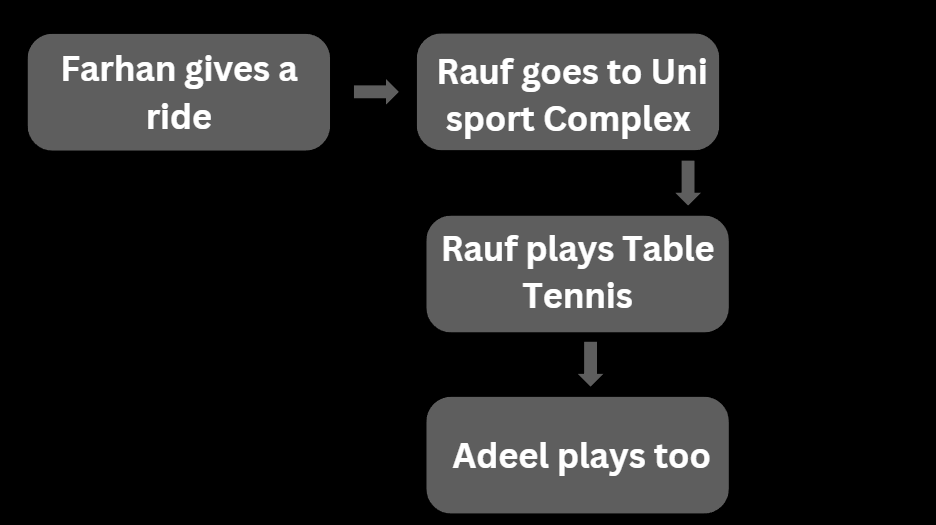

Uncertainty in AI refers to the condition where AI systems face incomplete or ambiguous information and must make decisions despite limited understanding of the situation.
Probability measures the likelihood of an event occurring. For example, if Rauf wants to play table tennis today, his decision might depend on whether Farhan gives him a ride to the university's sports complex. If Farhan can’t, Rauf has a 50% chance of finding someone else to help. Otherwise, he cannot play as Adeel also needs to coordinate with Rauf. Here’s the probability formula:
Probability = (Number of favorable outcomes) / (Total number of outcomes)
Example Python Code:
import random
probability_of_playing = 0.5 # 50% chance
if random.random() < probability_of_playing:
print("Rauf will play table tennis.")
else:
print("Rauf won’t play table tennis.")
Conditional probability considers the probability of an event occurring given that another event has already occurred. Using the previous example, the probability that Rauf plays table tennis given Farhan gives him a ride is:
P(A|B) = P(A ∩ B) / P(B)
Here’s a table for better understanding:
| Event | Probability |
|---|---|
| Farhan gives a ride | 0.7 |
| Rauf finds another option | 0.3 |
A random variable represents numerical outcomes of a random phenomenon. In this example, let X = 1 if Rauf plays table tennis, and X = 0 otherwise.
Two events are independent if the occurrence of one does not affect the occurrence of the other. For instance, Farhan giving a ride and the weather being good might be independent.
Bayes’ Rule allows us to update probabilities based on new evidence. The formula is:
P(A|B) = [P(B|A) * P(A)] / P(B)
Joint probability is the probability of two events occurring together. Using our example, it’s the probability that Farhan gives a ride and Rauf plays:
P(A ∩ B) = P(A) * P(B|A)
Example Table:
| Farhan Gives Ride | Rauf Plays | Joint Probability |
|---|---|---|
| Yes | Yes | 0.35 |
| No | No | 0.15 |
Bayesian Networks represent probabilistic relationships among variables. Here’s a sample diagram:
Sampling involves selecting a subset of data from a larger dataset to estimate population characteristics. Techniques include random sampling, stratified sampling, etc.
Markov Models describe systems where the next state depends only on the current state. Hidden Markov Models extend this by having hidden states. Example Python Code:
from hmmlearn import hmm
model = hmm.GaussianHMM(n_components=2)
data = [[0.2], [0.8], [0.4]]
model.fit(data)
print(model.predict(data))